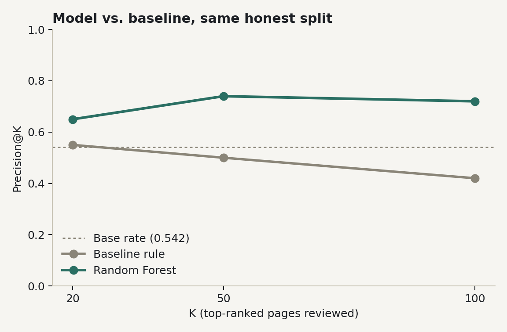
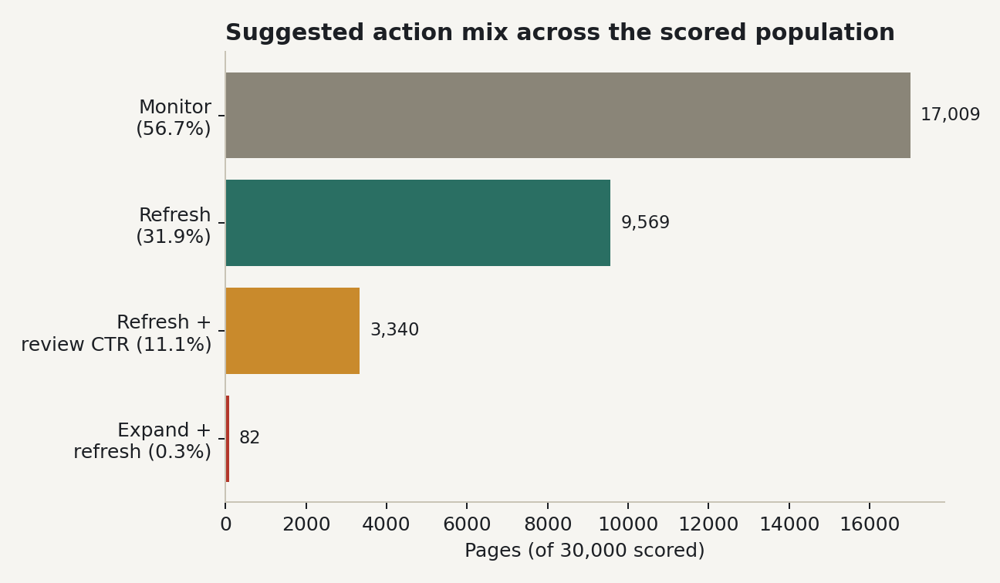
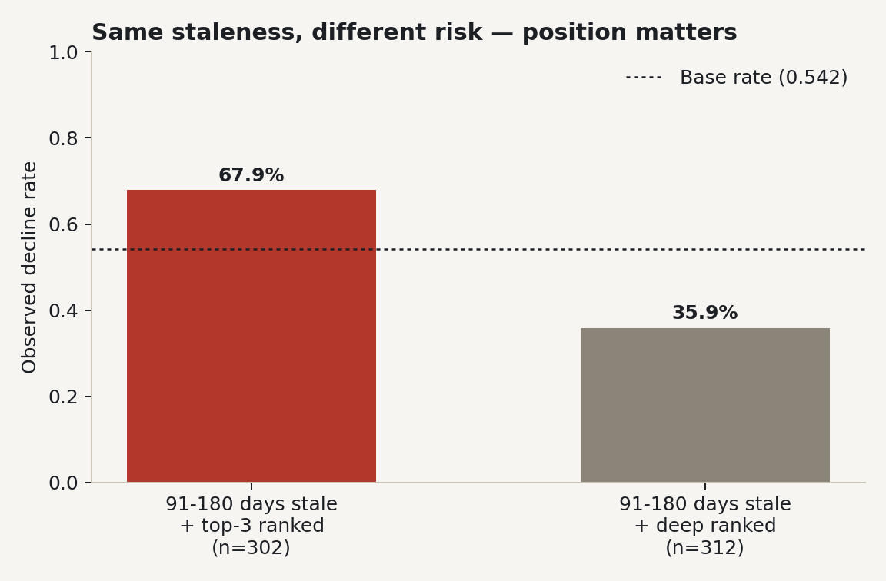

The problem: too many pages, too little review time
A content team with a fixed number of review hours each week needs to know where to look first.
Search-facing content decays quietly. A page that ranked well six months ago can lose impressions gradually enough that no single week looks alarming — until a quarter has passed and the loss is compounding. Content teams running refresh programs at any scale can't manually re-audit every page every week, so the real decision is triage: given a limited review budget, which pages should a human look at first, and why?
This is decision-support, not automation. The output of this work is a ranked queue with a stated reason per page — not a pipeline that edits or republishes anything on its own. A wrong call here costs a reviewer's time on a page that didn't need attention, or a missed page that keeps sliding for another month; neither is catastrophic, which is exactly why a transparent, auditable ranking is preferable to a black-box one.
A 30,000-row starter slice, not the full warehouse
This capstone runs on the 30,000-row starter CSV
(content_refresh_anonymized.csv) — 32 pseudonymized clients, one row per
content item, all traffic metrics trailing-90-day as of export — rather than the full
~79-million-row warehouse release, to keep the analysis reproducible as a single-file
pipeline. Client and page identifiers are pseudonyms throughout; no client names, URLs,
or raw search queries appear anywhere in this paper, the notebooks, or their outputs.
Population filter
impressions_90d > 0 AND content_age_days >= 90 — this
excludes brand-new and zero-traffic pages. That's a scope decision, not a hidden one: a
page with zero impressions isn't a refresh candidate, it's an indexing or visibility
problem, which is a different task entirely.
Columns excluded, and why
trend_direction/trend_pct— these are the label's own source; including them would be leakage.impressions_last_30d/prev_30dand the matching clicks/sessions columns — these are the label's own comparison windows.content_id/client_id— used for grouping in the validation split only, never as a model feature.provider_used/model_used— flagged in the data dictionary as not a model feature.
Full column-by-column reasoning: work/notebooks/w03_feature_leakage_check.ipynb, Section 4.
Label, features, baseline, model, and how we checked our own work
Label
is_declining_label = 1 when trend_direction == "down" — a
last-30-day impressions drop of more than 20% versus the prior 30 days. Base rate:
54.2% of in-scope pages.
Features
18 numeric features (keyword metadata, content properties, log-transformed trailing-90d
traffic totals, derived rates) plus 8 one-hot-encoded categorical features, drawn from
the single feature list reused across every notebook in the repo
(scripts/ml_utils.py). Feature-by-feature notes — meaning, missing-value
handling, when each is actually available — are in
w03_feature_leakage_check.ipynb, Section 2.
Baseline
A single hand-written rule, chosen for transparency over sophistication:
freshness_tier == "91-180" AND impressions_90d >= 300 → flag for refresh.
On the full population this rule clears the base rate by a real but modest margin —
flagged pages decline 61.7% of the time versus 51.8% for unflagged pages (n=7,212
flagged), against a 54.2% base rate.
Model
A Random Forest (class_weight="balanced_subsample", max_depth=10,
min_samples_leaf=25, 200 trees, random_state=42), chosen over
Logistic Regression and a single Decision Tree because the signal audit found several
features — position_tier and freshness_tier in particular —
break strict monotonicity with decline risk, a non-linear, threshold-like relationship a
linear model can't represent.
Validation design
A grouped client-holdout split: 20% of the 32 clients (6 clients, held
out entirely) form the test set, seeded at random_state=42.
client_id is used for grouping only, never as a feature — a model that has
seen a client's other pages during training has an unfair advantage on that client's
held-out pages, which is exactly what this split is designed to prevent.
Leakage checks
The leakage harness was tested against itself: injecting the label-derived
trend_pct as a feature collapses ROC AUC from an honest 0.750 to a suspicious
1.000, with that single injected column claiming 82.7% of feature
importance. That result confirms two things at once — the real feature set is clean,
and the test harness actually catches leakage when it's present.
Model vs. baseline, same split, honest numbers
Comparison uses precision@K rather than a single binary threshold, because on this particular 6-client holdout the baseline rule's own threshold flagged only 11 of 2,325 test rows (recall 0.007) — too few to compare reliably at one cutoff.
| K | Baseline rule | Random Forest |
|---|---|---|
| Top 20 | 0.55 | 0.65 |
| Top 50 | 0.50 | 0.74 |
| Top 100 | 0.42 | 0.72 |
| Base rate on this test set: 0.542 (grouped) — precision above this line reflects real discrimination, not just class imbalance. | ||

Why the split matters more than the model
Run the same model on a naive random row split instead — where 31 of the 32 clients overlap between train and test — and the numbers look better across the board: ROC AUC 0.758, average precision 0.768, precision@20 up at 0.95. That's not a better model; it's an easier, less honest test. We report both because the gap itself is a finding: a model can look meaningfully stronger simply because it's been graded on clients it already partly knows.
What this work cannot claim
- Cross-sectional, one snapshot. This cannot support "refreshing a page WILL improve its ranking" — only "these pages look worth reviewing first." It's decision-support, not a causal claim.
- Client-holdout variance. With only 32 clients, which 6 land in the test set matters. The baseline rule's own thin flag count on this split (11 rows) shows how much a single holdout can wobble; a different 6 clients could shift precision@K meaningfully.
- Confounded causes. The model cannot separate content-quality decline from external causes — competitor moves, SERP feature changes, seasonality. All three can produce the same label.
- Scope, by design. The population filter excludes brand-new and zero-traffic pages; this analysis says nothing about those pages.
- Starter slice only. 30,000 rows, not the ~79M-row warehouse — generalization to the full client portfolio is untested here.
decline_probabilityis a ranking, not a prediction. It prioritizes review order. It is not a forecast of what any search algorithm will do.
The action playbook
Applied across all 30,000 scored pages, the model's output sorts into four actions:

Start with stale, top-ranked pages — not just stale pages
The single riskiest measured combination is freshness_tier 91-180 days
crossed with position_tier top_3: a 67.9% observed decline rate (n=302).
The same staleness with a deep ranking position shows only 35.9% decline
(n=312) — staleness alone is a weak signal; it's the interaction with ranking position
that concentrates the risk. This is why the queue ranks by the model's joint probability
rather than freshness or position in isolation.

Prioritize by impressions × probability, kept separate
Review cost is roughly constant per page regardless of its traffic, so the queue
reports decline_probability alongside impressions_90d rather
than multiplying them into one opaque score. A time-limited reviewer should scan
high-impression, high-probability rows first — and can see exactly why each row is there.
Thin pages with real traffic → expand, don't just refresh
Pages under 1,200 words pulling 250+ impressions get flagged expand_and_refresh
(0.3% of the population, 82 pages) — a smaller, sharper bucket than a general refresh
pass, because the fix here is content depth, not just a freshness bump.
High-impression, low-CTR pages → check the SERP snippet first
Pages with 500+ impressions, a position of 20 or better, but under-0.5% CTR combined
with high decline risk get routed to refresh_and_review_ctr — a signal that
the issue may be the title/meta snippet, not the page body.
Everything else: monitor and re-score next cycle
56.7% of pages (17,009) carry no urgent reason code this cycle. Re-run the pipeline on the next export rather than reviewing them manually — the model is cheap to re-score, reviewer time is not.
Rerun it yourself
Everything above comes from a public repo. Clone it and every number here should reproduce exactly (random_state=42 throughout).
- Repo: github.com/Iqra411/lyrank-ML-internship
- This paper's notebook:
work/notebooks/capstone.ipynb - Leakage checks:
work/notebooks/w03_feature_leakage_check.ipynb - Validation audit (grouped vs. random split):
work/notebooks/w06_validation_audit.ipynb - Action playbook logic:
work/notebooks/w07_action_playbook.ipynb - Environment:
requirements.txtat repo root
git clone https://github.com/Iqra411/lyrank-ML-internship.git && pip install -r requirements.txtthen open
work/notebooks/capstone.ipynb and run all cells top to bottom.